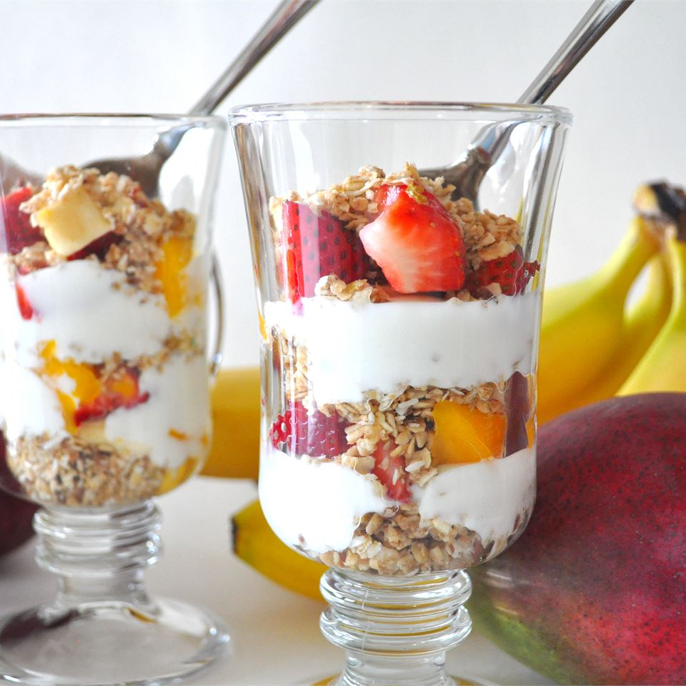

Yogurt Parfait

This is delicious for breakfast, snack, even for a dessert!
It looks great in a glass, but can also be made in a bowl.
Use your favorite fruit, or whatever is in season.
Ingredients
- 2 cups vanilla yogurt
- 1 cup granola
- 8 blackberries
Steps
- In a large glass, layer 1 cup yogurt, 1/2 cup granola and 4 blackberries.
- Repeat layers.